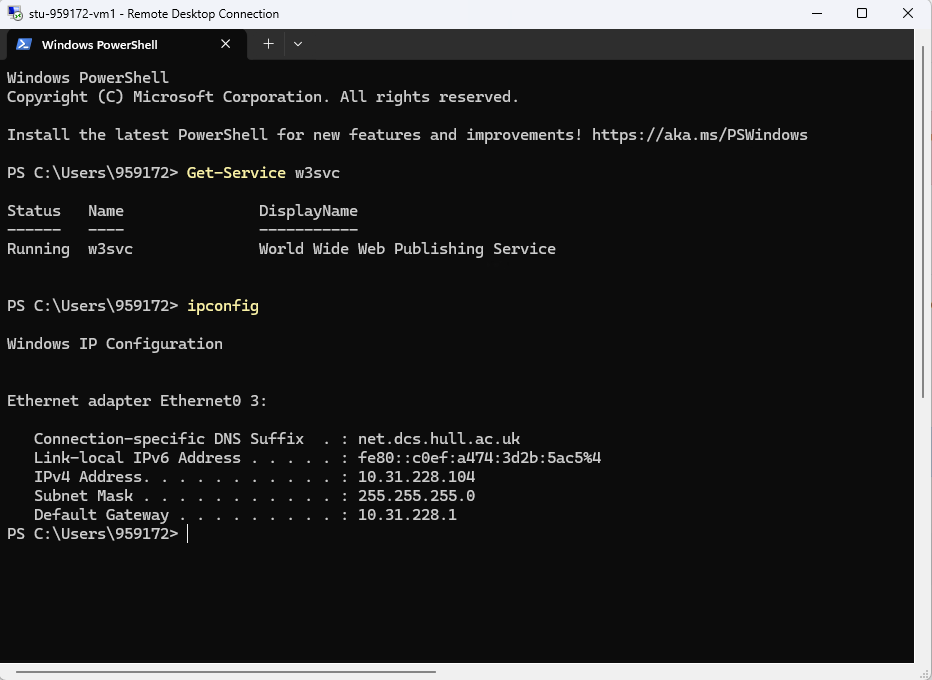
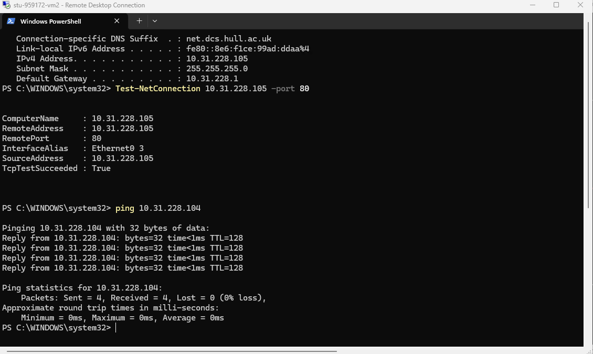
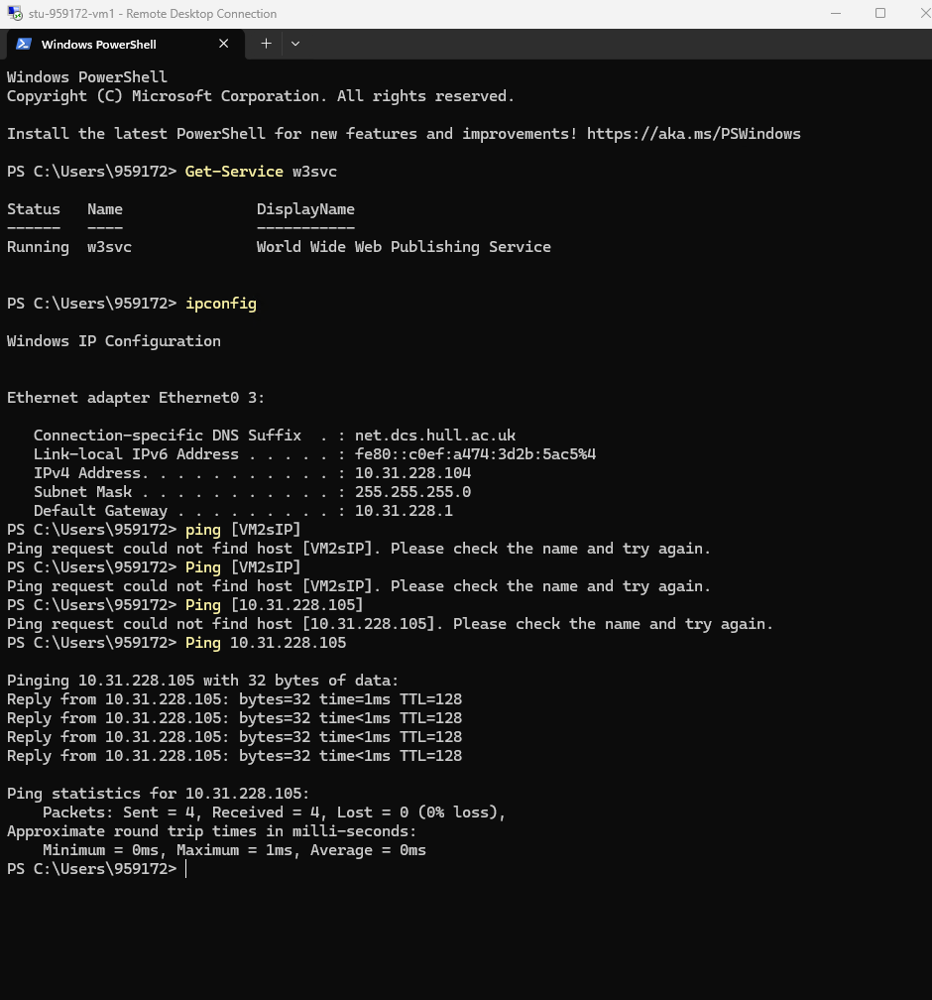
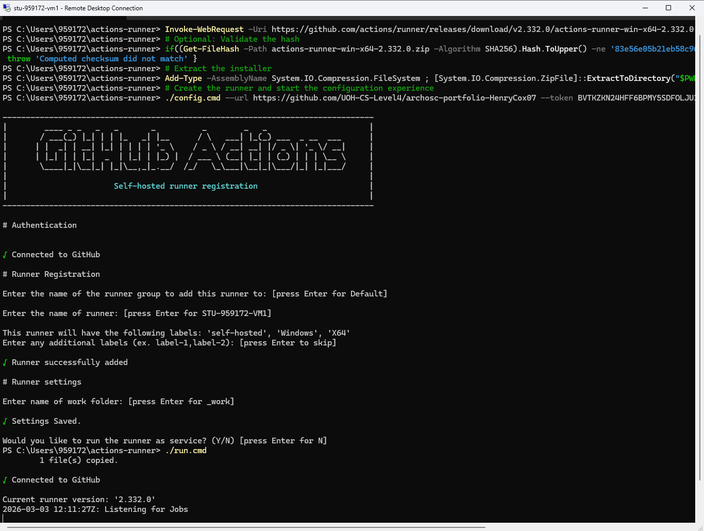
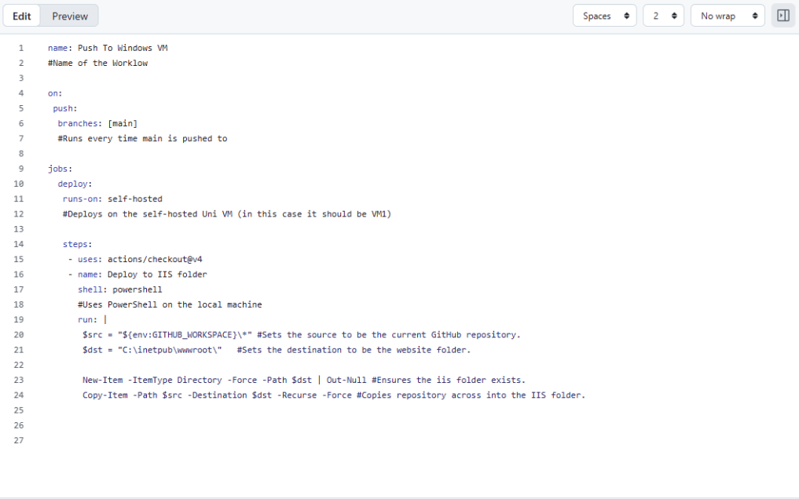
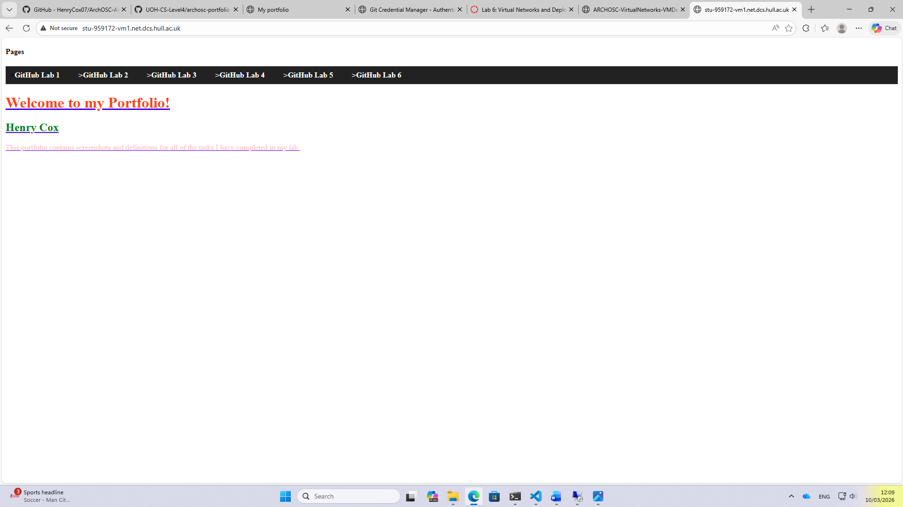

Task 1:
Task 1 required me to check if VM1 and VM2 could communicate with each other; this required me to check the IP address on both VMs. Then I performed a ping and entered VM2’s IP address which then showed that both VMs could communicate with each other. By performing this I was able to see that both virtual machines were connected and would be able to share data with each other using their IP addresses.

Task 2:
Next, I had to do a Network Connection test as I needed to see if the IIS server was running on my VM2 properly. After completing the test, I was left with results showing the Remote Address, Remote Port, the Interface Alias and the Source Address. Overall, this provides evidence that the IIS server on VM2 can be reachable across a network and that port 80 was accepting incoming connections successfully.

Task 3:
Task 3 required me to perform the same checks for VM1 as I did for VM2 since there is a chance that VM1 cannot communicate with V2 whilst VM2 still can communicate. At first I had entered the command incorrectly which caused the red error message to appear but after retyping it the Test-NetConnection was successful which showed that both virtual machines could communicate with one another properly across the network; this is proven by the 3rd screenshot which states TcpTestSuceeded = True.

Task 4:
After task 3, I had to deploy my website on one of my virtual machines and I did this using a runner. To use the runner, I went into my GitHub repo, navigated to the Actions tab and selected the runner. This provided me with a set of code to paste into my VM’s command prompt. Once the code had been pasted, I was left with a prompt telling me that my VM was connected to GitHub and that it is listening for Jobs. The benefit to having the runner is that it allowed GitHub Actions to deploy any changes that I made to the website automatically onto the virtual machine; this is a substantial time save as it stopped me from having to manually transfer the files over to the virtual machine myself any time a change was made.

Task 5:
After connecting GitHub to my Virtual Machine, I had to create a new workflow on GitHub that would push my website onto the Virtual Machine. To ensure that I still had my files I cut the files in my wwwroot folder and placed it into a backup folder on my desktop. Then on GitHub, I created a new workflow with the YAML provided and committed the changes which pushed the website onto the VM. The reason I needed the YAML is because the workflow it provides tells GitHub Actions what it needs to do whenever a change is pushed to the repository. The workflow specifies the branch that needs to be monitored, which self-hosted runner should execute the job and the PowerShell commands that are needed to copy the website files into the wwwroot folder.

Updated website on Virtual Machine:
Finally, at the end of the lab, I made some updates to my website to show that the runner and GitHub Actions are working as intended. I added a navigation bar to my website as well as changed the colour of the text on the menu on the machine I was working on and once I made the change, I pushed the change to the GitHub repository. Once this change was pushed onto the GitHub repository, GitHub Actions transferred the change over to the virtual machine. This can be seen in the screenshot as the URL shows that the webpage is running from VM1.

Reflection:
The work in Lab 6 taught me how to use effective networking between devices and how to use GitHub Actions with self-hosted runners to allow my website to update automatically whenever I make any changes to the pages locally which significantly improves work efficiency as it stops me from having to update my deployments every time I make a change to a page. I implemented these skills by connecting my VM1 and VM2 together using pings and Test Net-Connection. Then, I used a runner to allow my VM1 to listen for any jobs; this is what allows the VM to make automatic updates to the version of the website it has access to whenever a change is made to the local version preventing me from having to manually transfer files. Finally, The YAML that I was provided allowed GitHub actions to make changes to my deployment when a change was made.